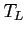

Next: Coupling Simplified MEP model
Up: Physical Models employed in
Previous: The Choice of the
Contents
From the vast literature, it is well known that Monte Carlo method is the best way for obtaining very accurate simulations for the transport of electrons in semiconductor devices. Even if this method is very accurate, it has the price of very high simulation time. This is why we introduce the MEP model in this release of GNU Archimedes. In this way, as we will see, we will have the possibility of coupling MEP and Monte Carlo in order to make Monte Carlo method faster.
As you can see from the precedent papers reported in the introduction of this chapter, the MEP model is a very advanced hydrodynamical model for both electrons and holes in Silicon devices. For our purpose we will need only a simplified version of it. This because, we only need simple initial conditions for the Monte Carlo method. In the following we report a sketch of this model. A paper is under construction and will be refered in the next versions of this manual. The MEP model is based on the closure of the semiclassical Boltzmann equation by means of the maximum entropy principle. Using the relaxation time approximation (for only the moments and not for the energy moment) and using the so-called Liotta-Mascali distribution function which has the following form
we get the following hydrodynamical model for electrons, which we will call the Simplified MEP model.
| |
|
 |
(5.27) |
| |
|
 |
(5.28) |
| |
|
|
(5.29) |
where
is a function of the electrons energy, as you can see from the precedent papers. This function is computed numerically and reads:
Furthermore, we have the following relations:
|
 |
|
(5.31) |
|
|
|
(5.32) |
For the moment relaxation time we have the following relations which are taken from the Baccarani model:
where
 |
(5.34) |
with
the low field mobility and 
the lattice temperature.
It is very easy to see how to adapt everything to Silicon heavy holes, so we do not report the Simplified MEP model for them.
Subsections
Next: Coupling Simplified MEP model
Up: Physical Models employed in
Previous: The Choice of the
Contents
Didier Link
2007-05-18